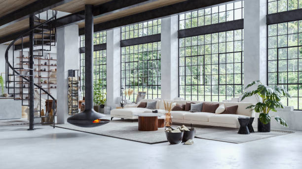

Our History
Founded in 1978, MMZ Interior Design began as a small, family-run design studio with a simple ambition: to create interiors that were both beautiful and genuinely enjoyable to live in. Over the decades, the company has grown from its modest beginnings into a respected interior design practice, while retaining the personal approach and attention to detail that shaped its earliest projects. Today, MMZ combines timeless design principles with contemporary ideas, creating spaces that feel distinctive rather than dictated by passing trends.

We take pride in our projects.
“MMZ understood that our workspace needed to do more than look impressive - it needed to work for our team and make the right impression on our clients. They created a sophisticated, welcoming environment that perfectly reflects our business. The transformation has been remarkable.”
Our Values
At MMZ Interior Design, we believe great interiors should reflect the people who inhabit them. Our approach is built around creativity, craftsmanship, integrity and collaboration. We take the time to understand each client's personality, lifestyle and aspirations before developing a design that feels truly personal. We value quality over shortcuts, thoughtful design over fleeting fashion, and honest communication throughout every stage of a project. Above all, we aim to create spaces that remain inspiring and functional for many years to come.
We take you into consideration.
“MMZ completely transformed our home. They took the time to understand how we wanted the space to feel and created something that was elegant, comfortable and unmistakably ours. We couldn't be happier with the result.”
FAQ's
What types of projects does MMZ Interior Design undertake?
We work on a wide range of residential and commercial interiors, from individual rooms and renovations to complete property transformations. Every project is tailored to the client's needs, style and budget.
Do you work with existing furniture and décor?
Absolutely. We can incorporate much-loved furniture, artwork and personal possessions into a new scheme wherever possible. We believe these pieces often give a space its character and sense of history.
How involved will I be in the design process?
Very involved. Collaboration is central to our approach. We guide you through the creative process, presenting ideas and recommendations while ensuring the final decisions reflect your tastes and requirements.
Can MMZ Interior Design work within a specific budget?
Yes. We discuss your budget at the beginning of every project and develop recommendations accordingly. Our aim is to make thoughtful design choices that deliver the greatest impact while keeping spending under control.
How do I get started?
Simply get in touch with our team to arrange an initial consultation. We'll discuss your project, your ideas and your requirements before recommending the best way forward.
Ready to get started?
Sign up now and get in touch! We can't wait to bring your dreams to life!